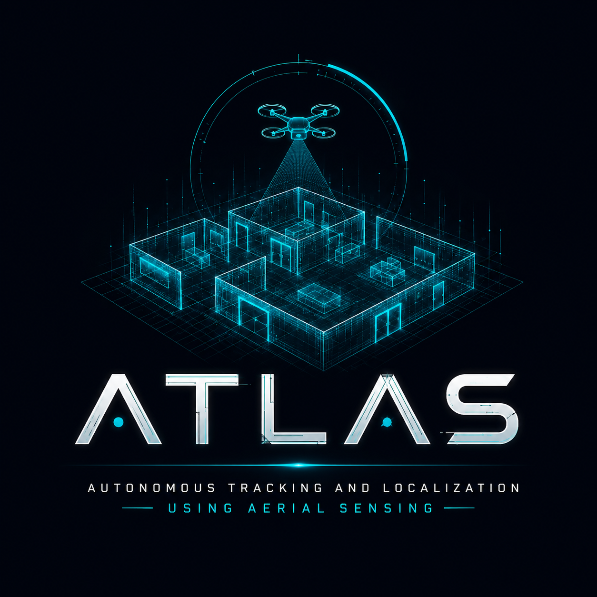
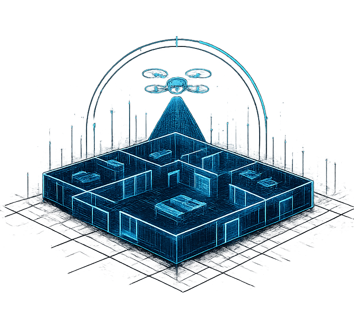

+
new 3D map
Create Dense 3D Map
Build the sparse localization map and a dense COLMAP viewer cloud from uploaded video or the live PC camera.
Ready for map input

Aerial localization console
Select an existing patrol map, add drone replay video, or create a new COLMAP map.
Build the sparse localization map and a dense COLMAP viewer cloud from uploaded video or the live PC camera.
Ready for map inputWaiting for camera frames.
Map: idle
Drone replay: idle
Create a map, enhance a map, or upload a drone video from a map card.
Start the DJI bridge to preview real drone frames here.
Detection calibration
Register target drones, upload calibration videos, and prepare one YOLO dataset that can detect every enemy-drone profile in ATLAS.
New target class
No upload selected.
Detector bank
YOLO labels
Choose an enemy drone profile to extract frames and draw bounding boxes.
Multi-aircraft operations
Dispatch independent DJI endpoints to saved patrols, supervise every live map session, and intervene without leaving this console.
Each physical drone uses its own Android phone/controller and IP. ATLAS isolates its stream, TSolve localization, commands, and logs.
Simultaneous command view
Every active drone will appear here at the same time.
Detailed inspector
Use the cards above for simultaneous supervision or select one for its complete timeline.
Register an endpoint or choose a drone above to open its live operations card.
Standby
No active assignment
Explainable operations
ATLAS builds a sparse COLMAP map for localization and attempts dense fusion for the 3D viewer.
Mapping videos used to build this 3D map.
Choose a saved patrol from a compatible map.
Import copies the patrol only. The source patrol and source map are never changed.
Record at least 8 samples at 4 measured distances spanning 0.75 m. Forward pursuit stays locked until validation passes.